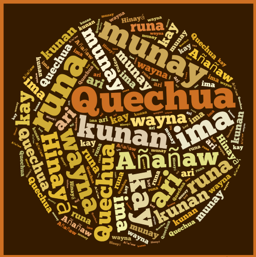
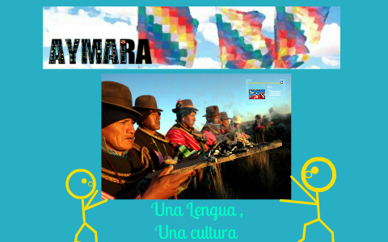
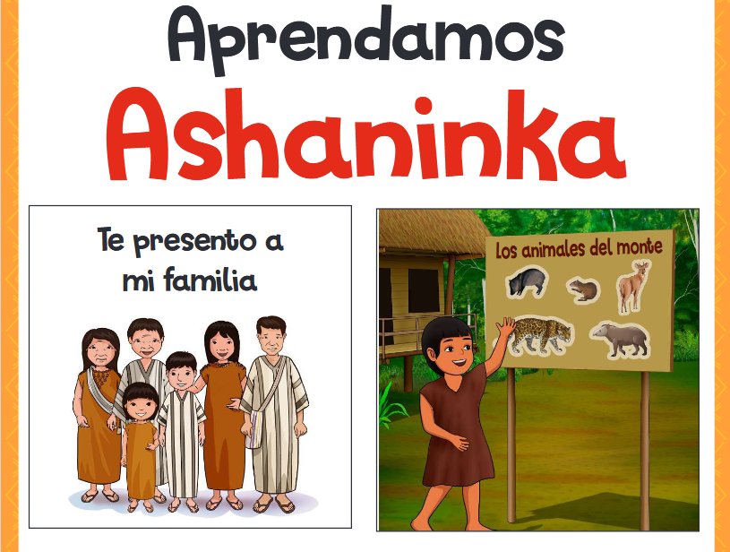
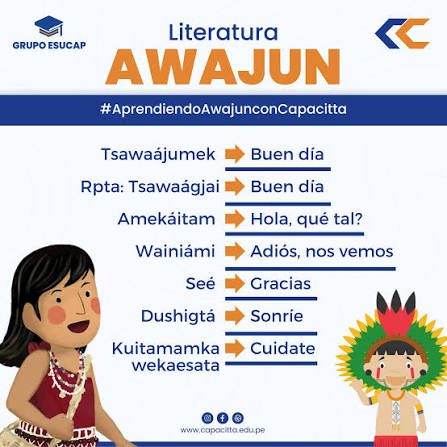
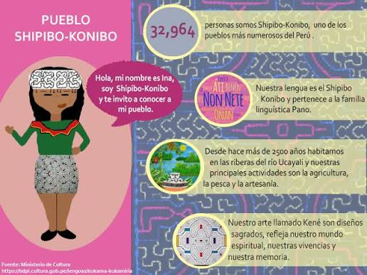
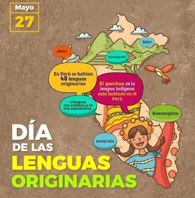

Cada lengua representa una parte importante de la identidad cultural del Perú.

Andes del Perú
+3.8 millones de hablantes
Estado: Vigente
La lengua indígena más hablada del Perú y una de las más importantes de Sudamérica.
Aprender
Puno
+450 mil hablantes
Estado: Vigente
Lengua ancestral hablada principalmente en el altiplano peruano y boliviano.
Aprender
Selva Central
+70 mil hablantes
Estado: Vulnerable
Representa una de las culturas amazónicas más importantes del Perú.
Aprender
Amazonas
+55 mil hablantes
Estado: Vigente
Lengua perteneciente a la familia jíbara, con gran riqueza cultural.
Aprender
Ucayali
+35 mil hablantes
Estado: Vigente
Destaca por su arte tradicional y su profundo conocimiento de la Amazonía.
Aprender
El Perú posee una enorme riqueza lingüística con 48 lenguas originarias vigentes, cada una representa conocimientos ancestrales, historia, costumbres y una forma única de comprender el mundo.
Lenguas Originarias
Pueblos Indígenas
Regiones
Hablantes
Cada palabra aprendida contribuye a preservar la riqueza cultural del Perú.